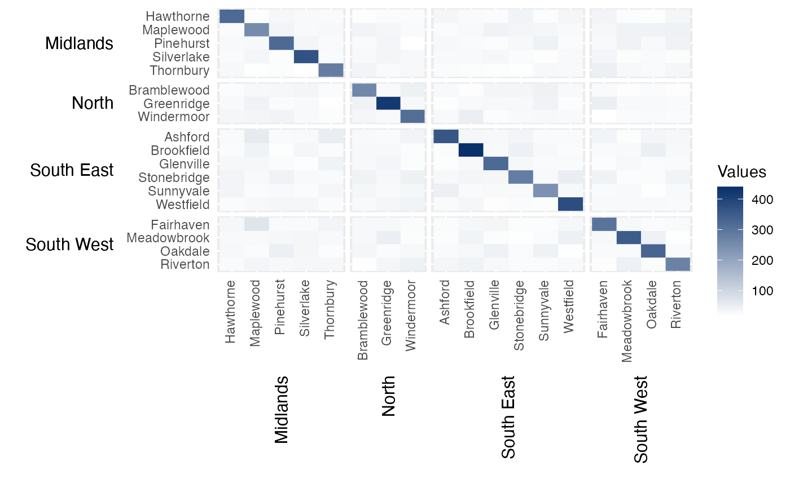
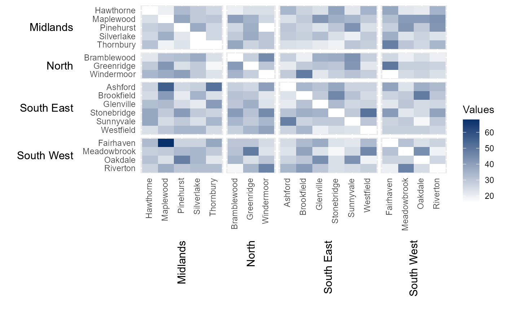
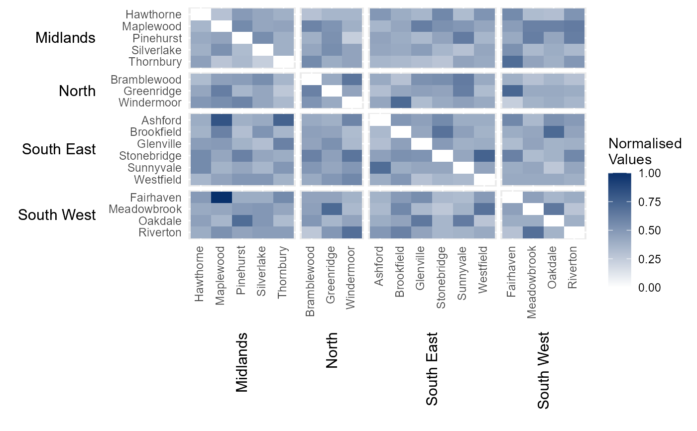
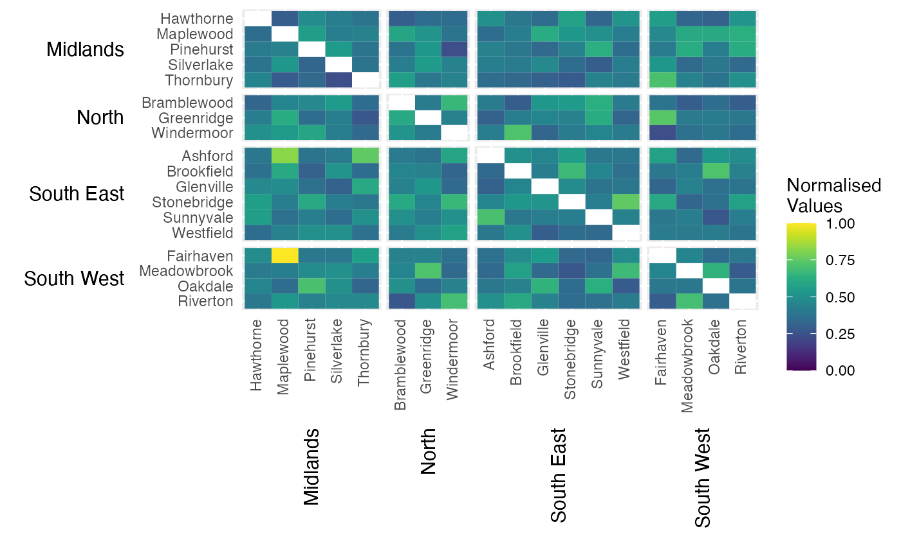
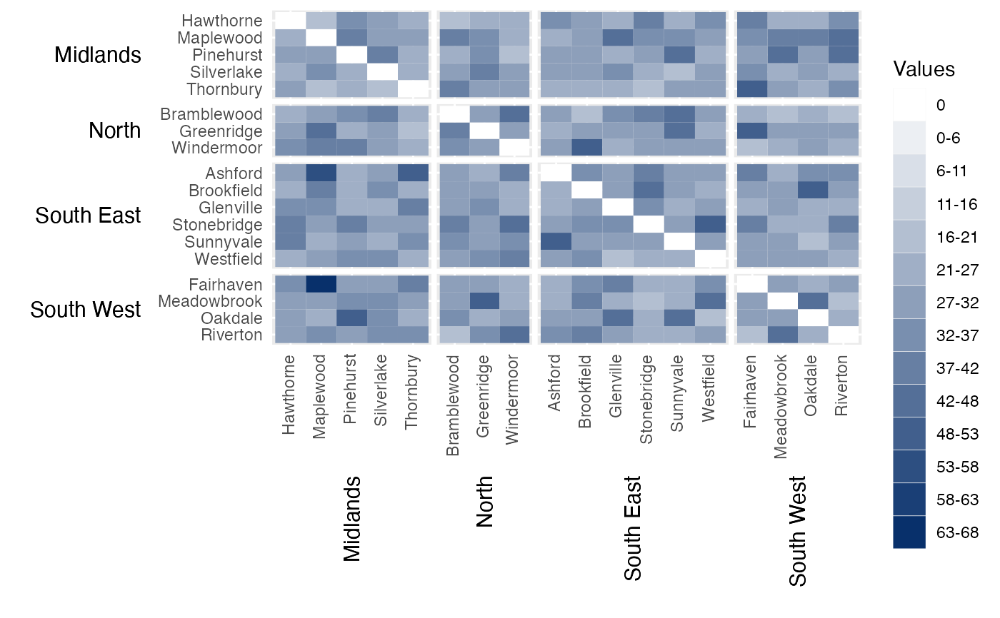
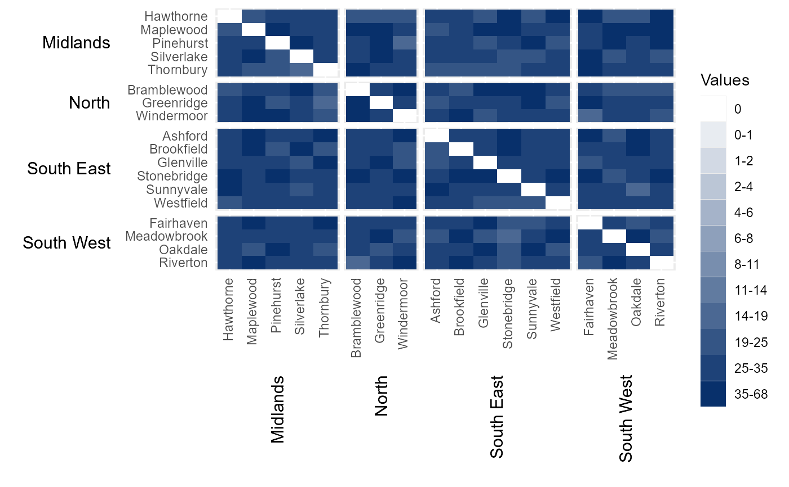
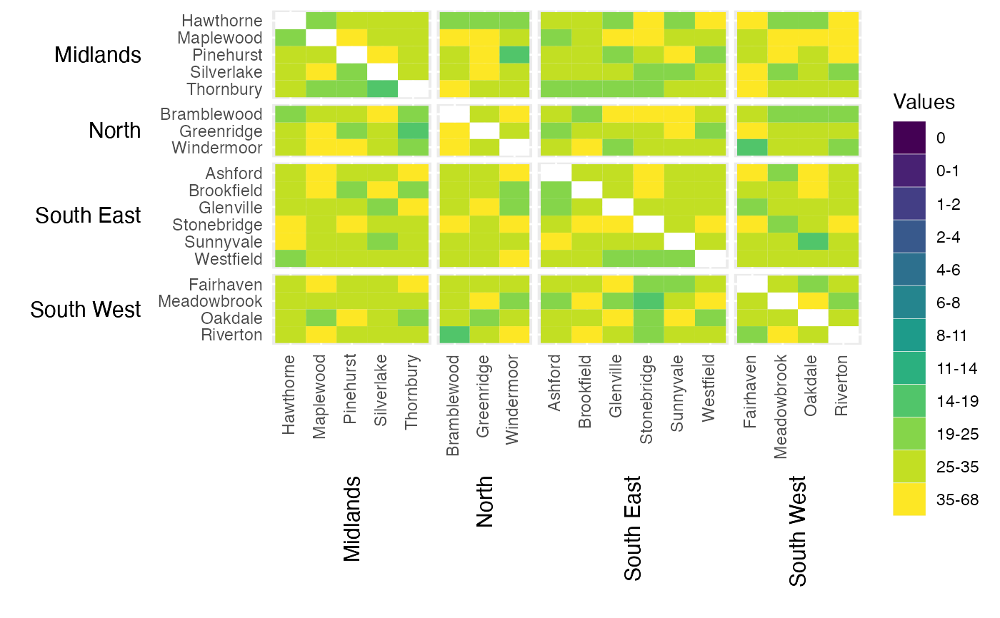

Creates a labelled heatmap from heirarchical data. This function is useful if you wish to create a heatmap where the categories shown on both the x and y axis can be grouped in some way. This heatmap will order the categories by their assigned group and present both the categories and group labels along the axes. An example might be a series of smaller geographies (lower categories) which aggregate into larger geographical regions (upper groups).
Usage
hhm(
df,
ylower,
yupper,
xlower,
xupper,
values,
rm_diag = F,
lgttl = NULL,
bins = NULL,
cbrks = NULL,
cclrs = NULL,
norm_lgd = F,
lgdps = 0,
xttl_height = 0.15,
yttl_width = 0.15
)Arguments
- df
A data.frame with containing values with which to populate the heatmap. The data.frame must include columns specifying the lower categories (`ylower`, `xlower`) and upper groups (`yupper`, `xupper`) that each value corresponds to. These categories and groups will be used to arrange and label the rows and columns of the heatmap. It must also contain a `values` variable containing the values used to populate the heatmap. Note that the groups will by default be arranged alphabetically (top to bottom / left to right). The ordering of the groups can be manually specified by converting yupper and/or xupper to factors. In this case, the groups will be ordered based on the ordering of the factor levels.
- ylower
A column in `df` containing the categories that will be presented as rows along the y-axis of the heatmap.
- yupper
A column in `df` containing the groupings that will be used to arrange the heatmap rows.
- xlower
A column in `df` containing the categories that will be presented as columns along the x-axis of the heatmap.
- xupper
A column in `df` containing the groupings that will be used to arrange the heatmap columns.
- values
A column in `df` containing the values used to populate the heatmap.
- rm_diag
Do not show values for categories along the x and y axes that are identical (defaults to `FALSE`). This is particularly useful for origin-destination heatmaps, where the user may want to hide the diagonal values.
- lgttl
Option to manually define legend title.
- bins
Option to break the data into a specified number of groups (defaults to `NULL`). The thresholds between these groups will be equally spaced between zero and the maximum value observed in `values`.
- cbrks
Vector of custom breaks, if users wish to use a discrete legend colour scheme (defaults to `NULL`). For example, a supplied vector of `c(5,10, 20)` would break he values up into 5 ordered groups of ranges 0, 0-5, 5-10, 10-20 and 20+.
- cclrs
Vector of hexcodes, which to create a custom legend colour scheme (defaults to `NULL`). If `cbrks` is supplied, `cclrs` must have a length two longer than `cbrks`. If `bins` is supplied, `cclrs` must have a length equal to the values provided to `bins`.
- norm_lgd
Normalised to between 0 and 1 in legend (defaults to `FALSE`). Allows for consistency when comparing heatmaps across different datasets. At present, this only works if all heatmap values are positive.
- lgdps
If using custom breaks, define the number of decimal points to round the legend scale to (defaults to 0). If `norm_lgd` is `TRUE`, it will default to 3.
- xttl_height
The space allocated to the group titles on the x-axis as a proportion of the heatmap's height (defaults to 0.15).
- yttl_width
The space allocated to the group titles on the y-axis as a proportion of the heatmap's width (defaults to 0.15).
Examples
# Import toy demonstration dataset (see `?example_migration` for see details)
data(example_migration)
# Intial heatmap
hierarchical_heatmap = hhm(df = example_migration,
ylower = "Origin County",
xlower = "Destination County",
yupper = "Origin Region",
xupper = "Destination Region",
values = "Migration",
yttl_width = 0.22,
xttl_height = 0.4)
# View result
hierarchical_heatmap

# Remove diagonal from heatmap (i.e. hide static populations)
removed_diag = hhm(df = example_migration,
ylower = "Origin County",
xlower = "Destination County",
yupper = "Origin Region",
xupper = "Destination Region",
values = "Migration",
yttl_width = 0.22,
xttl_height = 0.4,
rm_diag = TRUE)
# View result
removed_diag

# Nomalise the legend
normalised_lgd = hhm(df = example_migration,
ylower = "Origin County",
xlower = "Destination County",
yupper = "Origin Region",
xupper = "Destination Region",
values = "Migration",
yttl_width = 0.22,
xttl_height = 0.4,
rm_diag = TRUE,
norm_lgd = TRUE)
# View result
normalised_lgd

# Manually define colour scheme for heatmap (uses viridis colour scheme)
viridis_12 = c("#440154FF","#482173FF","#433E85FF","#38598CFF","#2D708EFF","#25858EFF",
"#1E9B8AFF","#2BB07FFF","#51C56AFF","#85D54AFF","#C2DF23FF","#FDE725FF")
# Assign continuous colour scheme
cont_clrs = hhm(df = example_migration,
ylower = "Origin County",
xlower = "Destination County",
yupper = "Origin Region",
xupper = "Destination Region",
values = "Migration",
yttl_width = 0.22,
xttl_height = 0.4,
rm_diag = TRUE,
norm_lgd = TRUE,
cclrs = viridis_12)
# View result
cont_clrs

# Break legends into a specified number of bins
# (of equal intervals between 0 and the maximum value in `values`)
bins_15 = hhm(df = example_migration,
ylower = "Origin County",
xlower = "Destination County",
yupper = "Origin Region",
xupper = "Destination Region",
values = "Migration",
yttl_width = 0.22,
xttl_height = 0.4,
rm_diag = TRUE,
bins = 15)
# View result
bins_15

# Manually break data into categories using user-specified intervals.
# In this instance, the `hhmR` function `log_seq` has been used to create a
# vector of logarithmicly increasing values between 1 and the maximum value
# in the dataset not on the diagonal.
cbrks = log_seq(example_migration[example_migration[["Origin County" ]] !=
example_migration[["Destination County"]],] %>%
.$Migration %>% max(), 12, rmv_extremes = TRUE)
# Manually assign legend categories
legend_cats = hhm(df = example_migration,
ylower = "Origin County",
xlower = "Destination County",
yupper = "Origin Region",
xupper = "Destination Region",
values = "Migration",
yttl_width = 0.22,
xttl_height = 0.4,
rm_diag = TRUE,
cbrks = cbrks)
# View result
legend_cats

# Manually assign colours to legend categories
cat_clrs = hhm(df = example_migration,
ylower = "Origin County",
xlower = "Destination County",
yupper = "Origin Region",
xupper = "Destination Region",
values = "Migration",
yttl_width = 0.22,
xttl_height = 0.4,
rm_diag = TRUE,
cbrks = cbrks,
cclrs = viridis_12)
# View result
cat_clrs
